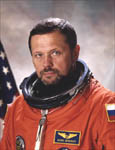

Lyndon B. Johnson Space Center
Houston, Texas 77058
|
National Aeronautics and Space Administration Lyndon B. Johnson Space Center Houston, Texas 77058 |
 |
Biographical Data |
||
Boris V. Morukov (M.D., Ph.D.)
Russian Cosmonaut at the State Research Center RF-Institute for Biomedical Problems (IBMP)
PERSONAL DATA: Born October 1, 1950, in Moscow, Russia. Married to Nina M. Morukova. They have two children: daughter Olga and son Ivan. Dr. Morukovs mother, Lidia F. Khromova, resides in Moscow. His father, Vladimir D. Morukov, is deceased. He enjoys reading, watching movies and cooking.
EDUCATION: Graduated from high school in 1967; received a doctorate in medicine from the 2nd Moscow Medical Institute (now Moscow Medical University) in 1973; joined the professorate in space, aviation and naval medicine at the Institute for Biomedical Problems in 1978; received a Ph.D. in the disciplines listed above in 1979.
As a cosmonaut-physician, Boris Morukov completed medical training in cardiology, gastroenterology, otolaryngology, stomatology, opthalmology, and cardiopulmonary resuscitation between 1989-1991. In 1995, he took an advanced course in emergency medical care. In 1996, he completed a medical training course in endocrinology and hematology.
From October 1990 to February 1992, Dr. Morukov attended a basic space-training course at Gagarin Cosmonaut Training Center.
HONORS / AWARDS: In 1989 the "Leader in Public Medical Service" award was conferred upon Boris Morukov. In 1996, he was awarded the medal "For Merits to Motherland" of the 2nd degree.
EXPERIENCE:
For more than 20 years, Dr. Morukov has been involved in providing medical operations support for manned space flights. From 1979-1980 he provided medical support for the prolonged space missions on the space station "Salut-6" as a member of the staff in Mission Control Center.
From 1982 to 1987 Boris Morukov coordinated scientific projects dedicated to the development of countermeasures to the negative metabolic changes that occur during hypokinesia and microgravity. His specific scientific interest in this area is calcium metabolism correction. He organized a series of experiments with prolonged head-down tilt, including a 370-day experiment dedicated to the experimental testing of a countermeasure complex for prolonged space flights.
Dr. Morukov participated in a joint American-Russian medical experiment on STS-60, Mir 18/STS-71 and all other Mir-NASA Project Missions. From 1995 to 1998 he served as the Human Life-Sciences Experiments Coordinator for the NASA-Mir scientific program.
Boris Morukov has published more than 100 scientific papers and has patents for 4 inventions.
Morukov was first selected for medical-cosmonaut service in 1976. Based on his qualifications, he was continually offered medical-cosmonaut selection and was chosen as a cosmonaut-researcher in 1989. Upon completion of his basic cosmonaut-training in 1992, he became a cosmonaut-researcher in the Institute for Biomedical Problems.
From January to July 1993, Morukov completed a technical, medical and scientific training course as a cosmonaut-researcher of the cosmonaut-physician flight on-board Mir Station Project (during Mir 15-17 Missions).
During the period from November 1997 to February 1998, he completed a regularly-scheduled technical training course, which included ISS Russian-segment systems.
From August 1998 to January 1999, Morukov attended the Flight-Surgeon Training Course at Johnson Space Center.
Most recently, Morukov served on the crew of STS-106 (September 8-20, 2000). The STS-106 crew successfully prepared the International Space Station for the arrival of the first permanent crew. The five astronauts and two cosmonauts delivered more than 6,600 pounds of supplies and installed batteries, power converters, a toilet and a treadmill on the Space Station. Two crew members performed a space walk in order to connect power, data and communications cables to the newly arrived Zvezda Service Module and the Space Station.
In completing his first space flight, Boris Morukov has logged 11 days, 19 hours, and 10 minutes in space.
SEPTEMBER 2000